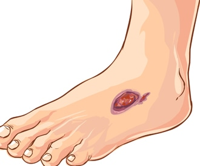

السكري
لسكري (Diabetes) يشمل هذا المصطلح عددًا من الاضطرابات التي تمتاز في وجود مشاكل في هرمون الأنسولين الذي ينتجه البنكرياس بالوضع الطبيعي لمساعدة الجسم استخدام السكر والدهون وتخزين بعضها. أما مرض السكري فيصيب الإنسان عند وجود مشاكل في انتاج هذا الهرمون ليرتفع مستوى السكر في الدم. فلنتعرف على أبرز الموضوعات المختصة بالسكري في هذا القسم من ويب طب.
مرض السكري Diabetes
محتويات الصفحة
اسماء اخرى:
يشمل مصطلح مرض السكري عددًا من الاضطرابات في عملية أيض الكربوهيدرات أي الهدم والبناء.
عملية الأيض الطبيعية
الكربوهيدرات التي يحصل عليها الجسم من تناول الخبز، والبطاطا، والأرز، والكعك وغيرها من الأغذية العديدة الأخرى تتفكك وتتحلل بشكل تدريجي، حيث تبدأ عملية التفكك والتحلل هذه في المعدة، ثم تستمر في الاثني عشر (Duodenum) وفي الأمعاء الدقيقة، حيث تنتج عن عملية التفكك والتحلل هذه مجموعة من السكريات يتم امتصاصها في الدورة الدموية. الموازنة بين هرمونين الإنسولين والغلوكاغون تحافظ على ثبات مستوى الغلوكوز في الدم وتجنبه التغيرات الحادة، وتشمل الخلايا المسؤولة عن إفراز هذه الهرمونات ما يأتي:
1. خلايا الإفراز الداخلي (Internal secretion)
يوجد في البنكرياس خلايا تسمى خلايا بيتا (Beta cells) وهي حساسة جدًا لارتفاع مستوى السكر في الدم حيث تقوم بإفراز هُرمون الإنسولين (Insulin). الإنسولين هو جسر أساس لدخول جزيئات السكر والغلوكوز إلى داخل العضلات حيث يتم استعماله كمصدر للطاقة، وإلى أنسجة الدهون والكبد حيث يتم تخزينه، كما يصل الغلوكوز إلى الدماغ أيضًا، ولكن بدون مساعدة الإنسولين.
2. خلايا ألفا (Alpha cells)
تتواجد في البنكرياس أيضًا وتُفرز هُرمونًا إضافيًا آخر يدعى الغلوكاغون (Glucagon)، هذا الهرمون يُسبب إخراج السكر من الكبد وينشّط عمل هُرمونات أخرى تعيق عمل الإنسولين. أصحاب الوزن السليم الذين يُكثرون من النشاط البدني يحتاجون إلى كمية قليلة من الإنسولين لموازنة عمل الغلوكوز الواصل إلى الدم، وكلما كان الشخص أكثر سُمنة وأقلّ لياقة بدنية أصبح بحاجة إلى كمية أكبر من الإنسولين لمعالجة كمية مماثلة من الغلوكوز في الدم، هذه الحالة تدعى مقاومة الإنسولين (Insulin resistance).
الإصابة بالسكري
عندما تصاب خلايا بيتا الموجودة في البنكرياس بالضرر، تقل كمية الإنسولين المفرزة بشكل تدريجي وتستمر هذه العملية سنوات عديدة. إذا ترافقت هذه الحالة مع وجود مقاومة الإنسولين، فإن هذا المزيج من كمية الإنسولين القليلة ومستوى فاعليته المنخفض يؤدي إلى انحراف عن المستوى السليم للغلوكوز أي السكر في الدم، وفي هذه الحالة يتم تعريف الشخص بأنه مصاب بمرض السكري (Diabetes). بعد صوم ثمان ساعات فإن نتيجة التحليل قد تدل على الآتي:
المعروف أن المستوى السليم يجب أن يكون أقلّ من 108 ملليغرام/ ديسيلتر.
المستوى الحدودي هو 126 ملليغرام/ ديسيلتر.
مستوى الإصابة هو 126 ملليغرام/ ديسيلتر وما فوق، في فحصين أو أكثر.
كيف نتعرف علي اعراض السكري
أعراض مرض السكري
تختلف أعراض مرض السكر تبعًا لنوع مرض السكري حيث أحيانًا قد لا يشعر الأشخاص المصابون ببداية السكري (Prediabetes) أو بالسكري الحملي (Pregnancy diabetes) بأية أعراض إطلاقًا.
أو قد يشعرون ببعض من أعراض السكري من النوع الأول والسكري من النوع الثاني أو بجميع الأعراض معًا، ومن أعراض مرض السكري:
- العطش
- التبول كثيرًا وفي أوقات متقاربة.
- الجوع الشديد جدًا.
- انخفاض الوزن لأسباب غير واضحة وغير معروفة
أسباب وعوامل خطر مرض السكري
في الآتي توضيح لأبرز الأسباب وعوامل الخطر:
1. الأسباب وعوامل الخطر الرئيسة للإصابة بالسكري
من الأسباب الرئيسة لهذا الارتفاع الحاد عند الإصابة بمرض السكري ما يأتي:
- 1. السمنة
- 2.قلة النشاط البدني.
- 3.التغيرات في أنواع الأطعمة فالأغذية الشائعة اليوم تشمل المأكولات الجاهزة التي تسبب السكري، كونها غنية بالدهنيات والسكريات التي يتم امتصاصها في الدم بسهولة، مما يؤدي إلى ازدياد مقاومة الإنسولين.
2. الأسباب وعوامل الخطر لمرض السكري النوع الثاني
عند الإصابة بمقدمات السكري التي قد تتفاقم وتتحول إلى السكري من النوع الثاني، تقاوم الخلايا تأثير عمل الإنسولين بينما يفشل البنكرياس في إنتاج كمية كافية من الإنسولين للتغلب على هذه المقاومة. في هذه الحالات يتجمع السكر ويتراكم في الدورة الدموية بدل أن يتوزع على الخلايا ويصل إليها في مختلف أعضاء الجسم، والسبب المباشر لحدوث هذه الحالات لا يزال غير معروف، لكن يبدو أن الدهنيات الزائدة وخاصة في البطن وقلة النشاط البدني هي عوامل مهمة في حدوث ذلك. لا يزال الباحثون يبحثون عن إجابة حقيقية ودقيقة على السؤال الآتي: لماذا تصيب حالتا بداية السكري والسكري من النوع 2 أشخاصًا محددين بعينهم دون غيرهم؟ ومع ذلك هنالك عدة عوامل من الواضح أنها تزيد من خطر الإصابة بمرض السكري، من بينها:
- العمر: عمر أكبر أو يساوي 45 سنة
- الوزن:. وزن زائد معرّف على أن مؤشر كتلة الجسم أكبر أو يساوي 25
- الوراثة:قريب عائلة من الدّرجة الأولى مريض بمرض السكري
- العرق:فئات عرقية معيّنة ومعروفة بخطورة مرتفعة لديها للإصابة بمرض السكرئ
- النشاط البدني:قلة النشاط البدني
- ارتفاع ضغط الدّم: حيث يكون أعلى من :90 /140 ملليمتر زئبق
- فرط الكولسترول:المقصود هنا ارتفاع الكوليسترول الضار.
مضاعفات مرض السكري
قد تؤدي الإصابة بمرض السكري إلى: ارتفاع تدريجي في ضغط الدم. اضطرابات مميزة في دهنيات الدم وخاصةً ارتفاع ثلاثي الغليسريد. انخفاض البروتين الكولسترول الجيد. الإصابة بأضرار مميزة: في الكليتين، وفي شبكيتيّ العينين (Retina)، وفي الجهاز العصبيّ. لكن تختلف المضاعفات الناتجة عن مرض السكري تبعًا لنوع السكري.
مضاعفات السكري الحملي
غالبية النساء اللواتي تصبن بمرض السكري الحملي تلدن أطفالًا أصحاء، ومع ذلك فإذا كان السكري في دم المرأة الحامل غير متوازن ولم تتم مراقبته ومعالجته كما ينبغي، فإنه قد يسبب أضرارًا لدى الأم والمولود معًا